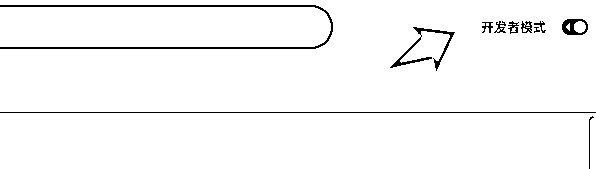

来源：https://rxas35pmvn.feishu.cn/docx/KxoddksIgoZtrnxuV6ScdweUn1c
中标的风向标是生财的宝藏，这是大家的共识。但是发布者和阅读者天然就有一些信息差的障碍，导致很多风向标并不能第一时间完全看明白，所以我做了一个帮助分析的 AI 助手
更新 安装链接：
chromewebstore.google.com
JTBD = Jobs To Be Done
https://hbr.org/2016/09/know-your-customers-jobs-to-be-done?ref=blog.helpdocs.io
应用市场还没审核通过

解压缩到一个文件夹，如


选择刚刚的文件夹

看到这个说明安装成功
大家使用中有什么问题，可以向我反馈